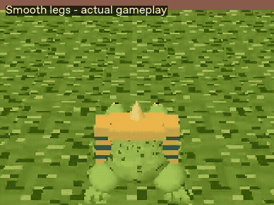
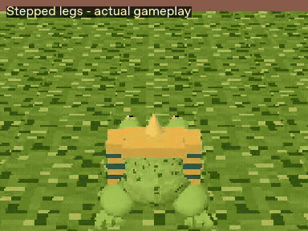

Smooth legs

Real controller playback from the same safe test map. The frog's collision, 0.34-second hop and movement rules are identical. Smooth is the default; Stepped holds only the leg poses at 12 poses per second.


Each sample contains three takeoff/landing pairs at the default relative mix. Start at a comfortable device volume.
Original procedural synthesis, CC0. No downloaded or purchased recordings. Effects duck under recorded speech. Provenance and source investigation.
Open the Godot project, or unpack the standalone Web export and serve its whole folder over HTTP. Choose Hop feel comparison from the menu or Pause. Pick a pose style, sound palette and hop volume; return to the same tile level. Choices last for the session. Sound Off mutes both effects and recorded voices.
Local recorded previews; no live Site deployment. Browser recording used Chromium/SwiftShader; actual hardware frame rate and physical iPhone/Safari remain unverified.